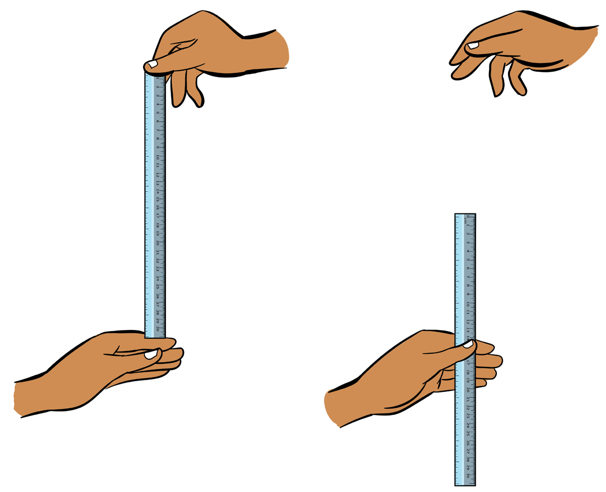

Activity 3.16
1.
Perform the agility T-test.
2.
Perform various exercises for agility.
Question:
What is the importance of improving agility in your athletic activities?
Reaction time
Reaction time is related to the time elapsed between stimulation and the beginning of the response. Reaction time is affected by several variables including attentiveness, cognitive and motor functions. For example, once the starter fires a gun, the sprinter reaction time to step off the blocks differs. Reaction time can easily be tested by the Ruler drop test, as shown in Figure 3.13.
Exercises for improving reaction time
The drills for improving reaction time include, tennis ball juggling and drop ball drills.

a bActivity 3.17
- 1.Perform the ruler drop test to measure your reaction time.
- 2.Perform various exercises for stimulating reaction time.
Question:
How poor reaction time can affect your sport performance?